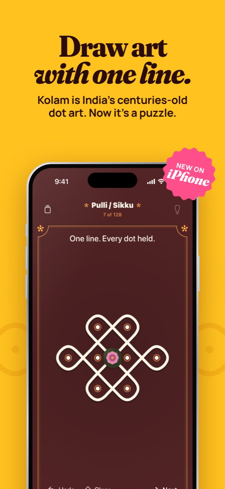
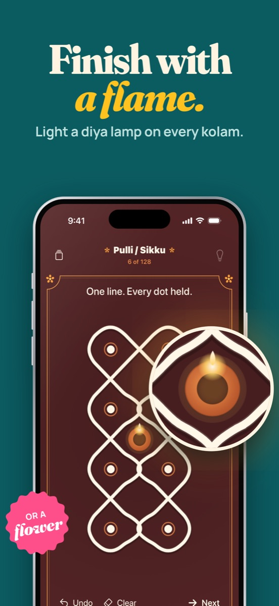
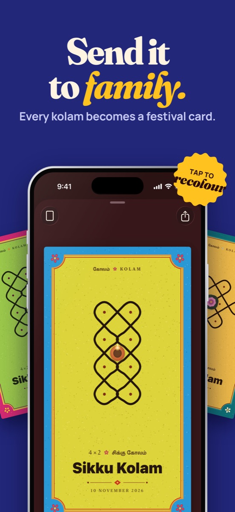
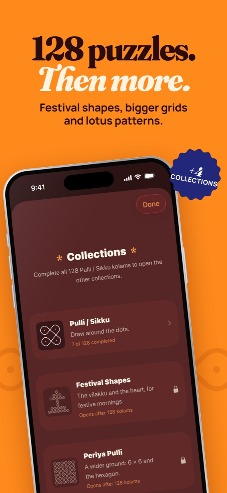

Draw
Start anywhere. Curve around the dots, cross your own line where the pattern asks for it, and close the loop.
Kolam is the dot-and-line art drawn at doorsteps across South India every morning. Here it becomes a calm puzzle: one continuous line, every dot held, no timer and no score.
See how it playsGet help
Trace a single line that loops around each dot without lifting your finger. Get it right and the line turns into a kolam your grandmother would recognise.
Start anywhere. Curve around the dots, cross your own line where the pattern asks for it, and close the loop.
Finish a kolam and drop a diya or a flower into its centre. Small sounds and haptics, nothing loud.
Every finished kolam becomes a festival card in the colours you pick. Save it to Photos or share it with family.
Start on small Pulli and Sikku grids. Finish them and Festival Shapes, Periya Pulli and lotus patterns open up.



Kolam is a morning ritual, not a feed. The app is built the same way.